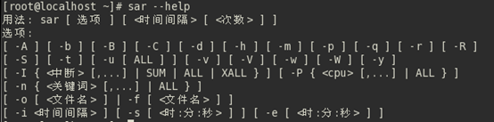

sar（System Activity Reporter系统活动情况报告）是目前 Linux 上最为全面的系统性能分析工具之一，可以从多方面对系统的活动进行报告，包括：文件的读写情况、系统调用的使用情况、磁盘I/O、CPU效率、内存使用状况、进程活动及IPC有关的活动等。本文主要以CentOS 6.3 x64系统为例，介绍sar命令。
sar命令常用格式
sar [options] [-A] [-o file] t [n]
其中：
t为采样间隔，n为采样次数，默认值是1；
-o file表示将命令结果以二进制格式存放在文件中，file 是文件名。
options 为命令行选项，sar命令常用选项如下：

-A：所有报告的总和
-u：输出CPU使用情况的统计信息
-v：输出inode、文件和其他内核表的统计信息
-d：输出每一个块设备的活动信息
-r：输出内存和交换空间的统计信息
-b：显示I/O和传送速率的统计信息
-a：文件读写情况
-c：输出进程统计信息，每秒创建的进程数
-R：输出内存页面的统计信息
-y：终端设备活动情况
-w：输出系统交换活动信息
1. CPU资源监控
例如，每10秒采样一次，连续采样3次，观察CPU 的使用情况，并将采样结果以二进制形式存入当前目录下的文件test中，需键入如下命令：
sar -u -o test 10 3
屏幕显示如下：
17:06:16 CPU %user %nice %system %iowait %steal %idle
17:06:26 all 0.00 0.00 0.20 0.00 0.00 99.80
17:06:36 all 0.00 0.00 0.20 0.00 0.00 99.80
17:06:46 all 0.00 0.00 0.10 0.00 0.00 99.90
Average: all 0.00 0.00 0.17 0.00 0.00 99.83
输出项说明：
CPU：all 表示统计信息为所有 CPU 的平均值。
%user：显示在用户级别(application)运行使用 CPU 总时间的百分比。
%nice：显示在用户级别，用于nice操作，所占用 CPU 总时间的百分比。
%system：在核心级别(kernel)运行所使用 CPU 总时间的百分比。
%iowait：显示用于等待I/O操作占用 CPU 总时间的百分比。
%steal：管理程序(hypervisor)为另一个虚拟进程提供服务而等待虚拟 CPU 的百分比。
%idle：显示 CPU 空闲时间占用 CPU 总时间的百分比。
1. 若 %iowait 的值过高，表示硬盘存在I/O瓶颈
2. 若 %idle 的值高但系统响应慢时，有可能是 CPU 等待分配内存，此时应加大内存容量
3. 若 %idle 的值持续低于1，则系统的 CPU 处理能力相对较低，表明系统中最需要解决的资源是 CPU 。
如果要查看二进制文件test中的内容，需键入如下sar命令：
sar -u -f test
2. inode、文件和其他内核表监控
例如，每10秒采样一次，连续采样3次，观察核心表的状态，需键入如下命令：
sar -v 10 3
屏幕显示如下：
17:10:49 dentunusd file-nr inode-nr pty-nr
17:10:59 6301 5664 12037 4
17:11:09 6301 5664 12037 4
17:11:19 6301 5664 12037 4
Average: 6301 5664 12037 4
输出项说明：
dentunusd：目录高速缓存中未被使用的条目数量
file-nr：文件句柄（file handle）的使用数量
inode-nr：索引节点句柄（inode handle）的使用数量
pty-nr：使用的pty数量
3. 内存和交换空间监控
例如，每10秒采样一次，连续采样3次，监控内存分页：
sar -r 10 3
屏幕显示如下：

输出项说明：
kbmemfree：这个值和free命令中的free值基本一致,所以它不包括buffer和cache的空间.
kbmemused：这个值和free命令中的used值基本一致,所以它包括buffer和cache的空间.
%memused：这个值是kbmemused和内存总量(不包括swap)的一个百分比.
kbbuffers和kbcached：这两个值就是free命令中的buffer和cache.
kbcommit：保证当前系统所需要的内存,即为了确保不溢出而需要的内存(RAM+swap).
%commit：这个值是kbcommit与内存总量(包括swap)的一个百分比.
4. 内存分页监控
例如，每10秒采样一次，连续采样3次，监控内存分页：
sar -B 10 3
屏幕显示如下：

输出项说明：
pgpgin/s：表示每秒从磁盘或SWAP置换到内存的字节数(KB)
pgpgout/s：表示每秒从内存置换到磁盘或SWAP的字节数(KB)
fault/s：每秒钟系统产生的缺页数,即主缺页与次缺页之和(major + minor)
majflt/s：每秒钟产生的主缺页数.
pgfree/s：每秒被放入空闲队列中的页个数
pgscank/s：每秒被kswapd扫描的页个数
pgscand/s：每秒直接被扫描的页个数
pgsteal/s：每秒钟从cache中被清除来满足内存需要的页个数
%vmeff：每秒清除的页(pgsteal)占总扫描页(pgscank+pgscand)的百分比
5. I/O和传送速率监控
例如，每10秒采样一次，连续采样3次，报告缓冲区的使用情况，需键入如下命令：
sar -b 10 3
屏幕显示如下：
18:51:05 tps rtps wtps bread/s bwrtn/s
18:51:15 0.00 0.00 0.00 0.00 0.00
18:51:25 1.92 0.00 1.92 0.00 22.65
18:51:35 0.00 0.00 0.00 0.00 0.00
Average: 0.64 0.00 0.64 0.00 7.59
输出项说明：
tps：每秒钟物理设备的 I/O 传输总量
rtps：每秒钟从物理设备读入的数据总量
wtps：每秒钟向物理设备写入的数据总量
bread/s：每秒钟从物理设备读入的数据量，单位为 块/s
bwrtn/s：每秒钟向物理设备写入的数据量，单位为 块/s
6. 进程队列长度和平均负载状态监控
例如，每10秒采样一次，连续采样3次，监控进程队列长度和平均负载状态：
sar -q 10 3
屏幕显示如下：
19:25:50 runq-sz plist-sz ldavg-1 ldavg-5 ldavg-15
19:26:00 0 259 0.00 0.00 0.00
19:26:10 0 259 0.00 0.00 0.00
19:26:20 0 259 0.00 0.00 0.00
Average: 0 259 0.00 0.00 0.00
输出项说明：
runq-sz：运行队列的长度（等待运行的进程数）
plist-sz：进程列表中进程（processes）和线程（threads）的数量
ldavg-1：最后1分钟的系统平均负载（System load average）
ldavg-5：过去5分钟的系统平均负载
ldavg-15：过去15分钟的系统平均负载
7. 系统交换活动信息监控
例如，每10秒采样一次，连续采样3次，监控系统交换活动信息：
sar - W 10 3
屏幕显示如下：
19:39:50 pswpin/s pswpout/s
19:40:00 0.00 0.00
19:40:10 0.00 0.00
19:40:20 0.00 0.00
Average: 0.00 0.00
输出项说明：
pswpin/s：每秒系统换入的交换页面（swap page）数量
pswpout/s：每秒系统换出的交换页面（swap page）数量
8. 设备使用情况监控
例如，每10秒采样一次，连续采样3次，报告设备使用情况，需键入如下命令：
# sar -d 10 3 –p
屏幕显示如下：
17:45:54 DEV tps rd_sec/s wr_sec/s avgrq-sz avgqu-sz await svctm %util
17:46:04 scd0 0.00 0.00 0.00 0.00 0.00 0.00 0.00 0.00
17:46:04 sda 0.00 0.00 0.00 0.00 0.00 0.00 0.00 0.00
17:46:04 vg_livedvd-lv_root 0.00 0.00 0.00 0.00 0.00 0.00 0.00 0.00
17:46:04 vg_livedvd-lv_swap 0.00 0.00 0.00 0.00 0.00 0.00 0.00 0.00
其中：
参数-p可以打印出sda,hdc等磁盘设备名称,如果不用参数-p,设备节点则有可能是dev8-0,dev22-0
tps:每秒从物理磁盘I/O的次数.多个逻辑请求会被合并为一个I/O磁盘请求,一次传输的大小是不确定的.
rd_sec/s:每秒读扇区的次数.
wr_sec/s:每秒写扇区的次数.
avgrq-sz:平均每次设备I/O操作的数据大小(扇区).
avgqu-sz:磁盘请求队列的平均长度.
await:从请求磁盘操作到系统完成处理,每次请求的平均消耗时间,包括请求队列等待时间,单位是毫秒(1秒=1000毫秒).
svctm:系统处理每次请求的平均时间,不包括在请求队列中消耗的时间.
%util:I/O请求占CPU的百分比,比率越大,说明越饱和.
1. avgqu-sz 的值较低时，设备的利用率较高。
2. 当%util的值接近 1% 时，表示设备带宽已经占满。
要判断系统瓶颈问题，有时需几个 sar 命令选项结合起来
怀疑CPU存在瓶颈，可用 sar -u 和 sar -q 等来查看
怀疑内存存在瓶颈，可用 sar -B、sar -r 和 sar -W 等来查看
怀疑I/O存在瓶颈，可用 sar -b、sar -u 和 sar -d 等来查看